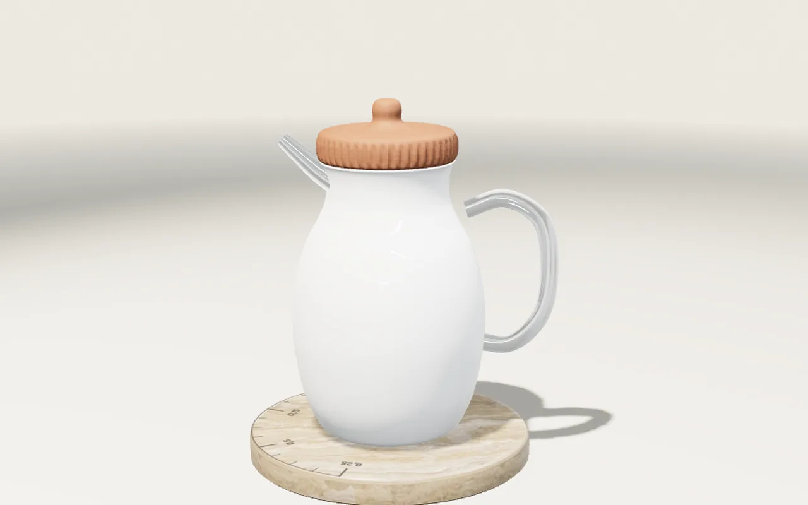
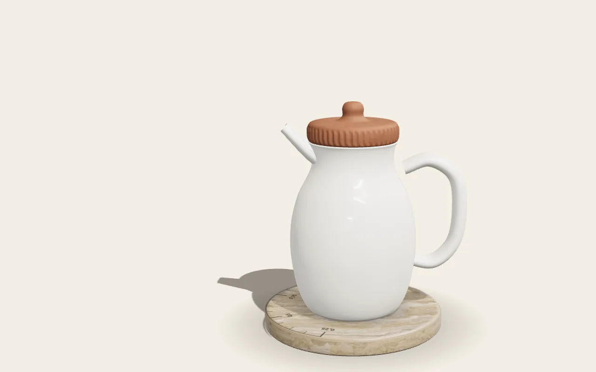

01Presentación
La jarra que mide con sombra.
Producto ficticio hecho para mostrar cómo trabajo.
Ánfora es una jarra de porcelana apoyada en una base de travertino. No tiene pantalla ni batería: un dial grabado en la piedra marca cuánta agua queda por la sombra que proyecta el cuerpo. Bajá para ver los materiales, el mecanismo y cómo se hizo esta página.
Desplazá: se mueve la luz, no la jarra.
02Materiales
Porcelana real, piedra real, arcilla real.
Nada procedural: los tres materiales son superficies fotoescaneadas publicadas bajo CC0 por ambientCG, iluminadas con un estudio fotografiado por Poly Haven. Lo que ves es el mapa de color, el relieve y la rugosidad de cada uno, medidos sobre el material original.
- Porcelana esmaltada
- Cuerpo, asa y pico. Rugosidad media del mapa: 0,07. Brillo de esmalte con un velo de 0,25 para el blanco translúcido.
- Porcelain001 · ambientCG · CC0
- Travertino pulido
- Base y dial. Rugosidad media del mapa: 0,03, un pulido espejo. En la escena la subí a 0,27: la piedra tiene que leerse como piedra, no como vidrio.
- Travertine003 · ambientCG · CC0
- Arcilla cocida
- Tapa con 48 estrías. Rugosidad media del mapa: 0,58, con oclusión y relieve del escaneo; las estrías son geometría, no textura.
- Clay002 · ambientCG · CC0
03Cómo funciona
La sombra cae sobre el dial. Nada más.
1,00 L
Llena, la jarra pesa más y se hunde apenas en el calzo de la base; vacía, sube. El cuerpo cambia de altura y su sombra sobre el dial cambia de largo: una marca por cada cuarto de litro. Sin sensores ni pantalla, una luz, una piedra y una lectura.
Seguí bajando: la tapa se abre, el nivel baja y el numeral acompaña.
04Detalle
Cuatro decisiones de forma.
Asa
Sección elíptica, no redonda: la mano la toma de canto y la jarra llena no gira.
Pico
Labio de tres milímetros con el canto vivo adentro: corta el chorro y no gotea por fuera.
Base
Travertino de veinticinco milímetros con chaflán de cuatro: el peso queda abajo y el canto no se astilla.
Tapa
Arcilla con cuarenta y ocho estrías: se agarra con los dedos mojados y no suena al apoyarla.
05Cómo se hizo
El proceso, a la vista.
El brief que usé
Una jarra de porcelana con base de travertino que marca cuánta agua queda por la sombra que proyecta. Una cámara y cinco paradas atadas al scroll. Materiales fotoescaneados CC0 iluminados con un entorno real. Si no hay WebGL o la persona pidió menos movimiento, una imagen de la misma escena. Peso total menor a cuatro megabytes y sesenta cuadros por segundo en una GPU integrada.
Qué le pedí al agente
La geometría por revolución, con el asa de sección elíptica, el pico que se afina y las estrías de la tapa como desplazamiento de vértices, no como textura. El dial como calcomanía sobre la piedra. Que lo que se mueva sea la luz y la cámara, nunca el objeto en bucle, y que toda deriva se apague sola a los doce segundos sin eventos. Que todo texto entre línea por línea atado al scroll, salvo la primera pantalla, que entra al cargar.
Iteraciones con captura
Cada tanda terminó en una captura a resolución real que miré antes de seguir. Abajo, la primera pasada de la escena y la versión final: lo que cambió entre una y otra son decisiones, no suerte.


Presupuesto cumplido, medido
- Peso total de la página, con 3D
- 1,9 MB en disco · 1,1 MB en la primera vista, comprimida
- Texturas (once mapas WebP)
- 258 KB en total, ninguno mayor de 1024 px
- Entorno de iluminación
- 394 KB · HDR de 512 × 256 reducido a mano
- Cuadros por segundo medidos
- 120, el tope de la pantalla, en la GPU integrada a 1920 × 1080; peor cuadro 16,8 ms
Qué cambiaría hoy
Un modelo comprimido en vez de geometría generada al cargar, un cubo de entorno prefiltrado en vez del archivo HDR, y una cámara que acompañe el gesto del puntero con más carácter. Lo que no cambiaría: que la captura mande sobre la opinión.
Esto es una página de prueba. El producto no existe; el método, sí.